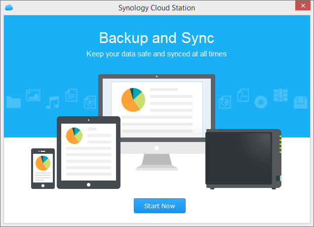

总览
用于 Synology NAS 的 Cloud Station 是一款文件同步应用程序，该程序可让您轻松与其它设备（如计算机或带 DS cloud 的移动设备）同步 Synology NAS 上的文件。在 Synology NAS 和计算机上安装 Cloud Station 后，存储在计算机上指定文件夹中的文件将自动同步到 Synology NAS。
1. 安装 Cloud Station
- 进入套件中心，找到 Cloud Station，然后单击安装。

2. 启用 Cloud Station
- 启动 Cloud Station。
- 如果您未启用用户主目录功能，系统会提示您先将其启用。单击确定。
- 您将被重新引导至用户设置页面。启用用户主目录并单击应用。
- 现在回到 Cloud Station，系统会提示您将其启用。单击是。
- 进入权限并指定可用的 Cloud Station 用户。单击保存。


3. 安装并启用客户端
- 进入 Cloud Station > 概述并单击计算机按钮。
- 单击该按钮可为您的操作系统下载 Cloud Station。(您还可从 Synology 下载中心下载 Cloud Station。)
- 启动计算机上的安装程序并按屏幕说明安装 Cloud Station。
- 安装后，在计算机上运行 Cloud Station。单击立即开始。 
- 输入运行 Cloud Station 的 Synology NAS 地址（或 QuickConnect ID）、用户名和密码。您可单击右侧的搜索图标来搜索 LAN 中的 IP 地址。单击下一步。
- 选择您要设置任务的方式 (我们将在此选择快速设置)，然后单击下一步。
- 单击完成以完成 Cloud Station 文件夹的设置。
- 单击立即打开以打开 Cloud Station 文件夹。
- 您可在系统托盘中找到 Cloud Station 图标。
- 双击 Cloud Station 图标可打开托盘菜单。您可在此查看进程和文件的状态。单击主应用程序可打开 Cloud Station。
- 启动进，将显示如何使用 Cloud Station 的一些提示。单击向右箭头可看到更多提示，或单击进入在线教程以获得更多信息。如果您不需要提示，单击不要再显示此信息。
- 现在您可以 Cloud Station 中管理您的同步任务。


4. 将数据同步到您的移动设备
DS cloud 可在 Apple App Store 和 Google Play Store 中免费获得。您还可以扫描下面的二维码直接下载。